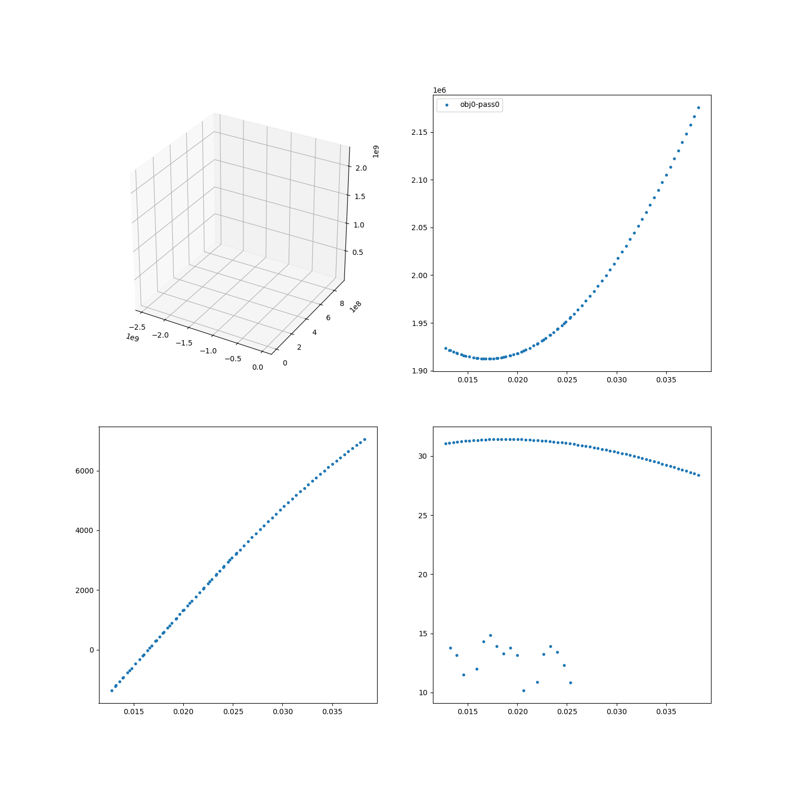

Note
Click here to download the full example code
Simulate tracking with simulation helper¶

Out:
2020-09-17 12:27:43.791 INFO ; Simulation:run:find_passes
2020-09-17 12:27:43.919 INFO ; Simulation:run:find_passes [completed]
2020-09-17 12:27:43.919 INFO ; Simulation:run:calculate_measurements
2020-09-17 12:27:43.919 INFO ; Simulation:run:calculate_measurements [completed]
2020-09-17 12:27:43.919 INFO ; Simulation:run:observe_passes
2020-09-17 12:27:43.921 INFO ; Simulation:run:observe_passes [completed]
2020-09-17 12:27:43.922 ALWAYS ;
------------------------------ Performance analysis ------------------------------
Name | Executions | Mean time | Total time
---------------------------------------+--------------+---------------+--------------
Simulation:run:find_passes | 1 | 1.27673e-01 s | 98.06 %
Simulation:run:calculate_measurements | 1 | 4.80175e-04 s | 0.37 %
Simulation:run:observe_passes | 1 | 1.44100e-03 s | 1.11 %
total | 1 | 1.30197e-01 s | 100.00 %
----------------------------------------------------------------------------------
import numpy as np
import matplotlib.pyplot as plt
import h5py
import pickle
import sorts
eiscat3d = sorts.radars.eiscat3d_interp
from sorts.scheduler import PriorityTracking, ObservedParameters
from sorts.controller import Scanner
from sorts import SpaceObject, Simulation
from sorts import MPI_single_process, MPI_action, iterable_step, store_step, cached_step
from sorts.radar.scans import Fence
from sorts.propagator import SGP4
Prop_cls = SGP4
Prop_opts = dict(
settings = dict(
out_frame='ITRF',
),
)
objs = [
SpaceObject(
Prop_cls,
propagator_options = Prop_opts,
a = 7200e3,
e = 0.1,
i = inc,
raan = 79,
aop = 0,
mu0 = 60,
epoch = 53005.0,
parameters = dict(
d = 0.1,
),
oid = ind,
) for ind, inc in enumerate(np.linspace(69,75,num=10))
]
class ObservedTracking(PriorityTracking, ObservedParameters):
pass
scheduler = ObservedTracking(
radar = eiscat3d,
space_objects = objs,
timeslice = 0.1,
allocation = 0.1*600,
end_time = 3600*6.0,
priority = np.ones(len(objs)),
use_pass_states = True,
)
class Tracking(Simulation):
def __init__(self, *args, **kwargs):
super().__init__(*args, **kwargs)
self.steps['find_passes'] = self.find_passes
self.steps['calculate_measurements'] = self.calculate_measurements
self.steps['observe_passes'] = self.observe_passes
@store_step(store=[f'scheduler.{x}' for x in ['passes', 'states', 'states_t']], iterable=True)
@MPI_action(action='bcast', iterable=True)
@iterable_step(iterable='scheduler.space_objects', MPI=True)
@cached_step(caches='pickle')
def find_passes(self, index, item, **kw):
passes, states, t = self.scheduler.get_passes(index)
return passes, states, t
@store_step(store='scheduler.measurements')
@MPI_action(action='bcast')
@MPI_single_process(process_id = 0)
@cached_step(caches='pickle')
def calculate_measurements(self, **kw):
self.scheduler.calculate_measurements()
return self.scheduler.measurements
@store_step(store='obs_data', iterable=True)
@MPI_action(action='gather-clear', iterable=True)
@iterable_step(iterable='scheduler.passes', MPI=True)
@cached_step(caches='pickle')
def observe_passes(self, index, item, **kw):
data = scheduler.observe_passes(item, space_object = self.scheduler.space_objects[index], snr_limit=True)
return data
@MPI_single_process(process_id = 0)
def plot(self, oid = None, tx=0, rx=0):
fig = plt.figure(figsize=(15,15))
axes = [
[
fig.add_subplot(221, projection='3d'),
fig.add_subplot(222),
],
[
fig.add_subplot(223),
fig.add_subplot(224),
],
]
for ind in range(len(self.obs_data)):
if oid is not None:
if oid != ind:
continue
for pi in range(len(self.scheduler.passes[ind][tx][rx])):
ps = self.scheduler.passes[ind][tx][rx][pi]
axes[0][0].plot(ps.enu[tx][0,:], ps.enu[tx][1,:], ps.enu[tx][2,:], '-')
dat = self.obs_data[ind][tx][rx][pi]
if dat is not None:
axes[0][1].plot(dat['t']/3600.0, dat['range'], '.', label=f'obj{ind}-pass{pi}')
axes[1][0].plot(dat['t']/3600.0, dat['range_rate'], '.')
axes[1][1].plot(dat['t']/3600.0, 10*np.log10(dat['snr']), '.')
axes[0][1].legend()
sim = Tracking(
scheduler = scheduler,
root = '/home/danielk/IRF/E3D_PA/sorts_v4_tests/sim2',
)
# sim.delete('test')
# sim.branch('test', empty=True)
# sim.branch('mpi', empty=True)
sim.checkout('test')
# sim.branch('test-no-mpi', empty=True)
sim.profiler.start('total')
sim.run()
sim.profiler.stop('total')
sim.logger.always('\n'+sim.profiler.fmt(normalize='total'))
sim.plot(oid=0)
plt.show()
Total running time of the script: ( 0 minutes 0.601 seconds)